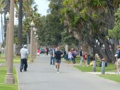 |
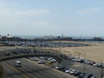 |
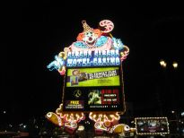 |
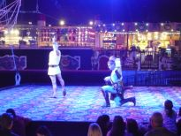 |
| Santa Monica | Santa Monica | Circus Circus Hotel & Casino | Circus Circus Hotel & Casino |
The first day was very long because of time lag. We left Narita Airport in the evening and after 10 hours arrived at Los Angele at noon.
Santa Monica is the well-known coast not only to foreigner but also to American. America is so big enough that many people don't know sea and some of them come here to enjoy sea shores. Then we rode on a bus for 5 hours and got to Las Vegas late evening.
We stayed at Circus Circus Hotel & Casino. In the hotel we had dinner at the buffet style restaurant. Dishes tasted so so but beef was terrible. Beef looked delicious, I took two slices of beef and ate as torture. Then my wife tried the bet-machine and we watched at a circus show which was held every twenty minute all day.
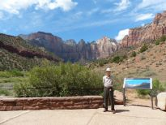 | 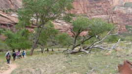 | 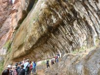 | 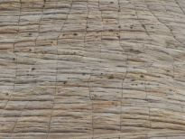 |
| West Temple | Hike in Zion National Park | Weeping Rock | Checkerboard Mesa |
Our purpose of this tour was to see Grand Canyon. I didn't understand where we would go and what would be there that day.
First, we arrived at West Temple in Zion National Park. The local guide said that you could climb up the West Temple. If I had enough time to hike the mountain, it would be good place, but I only just looked upward and it looked a familiar mountain.
After short bus trip we hiked the valley for about thirty minutes, passing through huge rock mountains along a small river . Weeping Rock was the end of the hike. On the way most of time we got good wind and for a while we got light rain.
Then we went to a place to see Checkerboard Mesa by bus.
Next, our lunch was two beef hamburgers at a log house restaurant that command good scenery, but that tasted so bad that I left one.
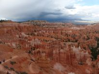 | 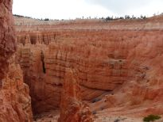 | 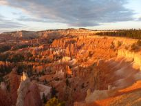 | 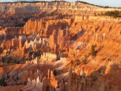 |
| Sunset Point | Sunset Point | Sunrise Point (3) | Sunrise Point (3) |
Third day we went to Sunrise Point early in the morning. It was very cool, about 5 'C, because there was an altitude of 2,700 m.
The more the sun shined on beautiful land, the finer the figure and color changed.
After lunch we got to Sunset Point of Bryce Canyon National Park in the evening.
There was a very beautiful place. This area is 145 Km2 and is not so small, but it looks like a fine garden.
It is said "The major feature of the park is Bryce Canyon, which despite its name, is not a canyon but a collection of giant natural amphitheaters along the eastern side of the Paunsaugunt Plateau."
We left there and we arrived at the hotel of Brice area.
And we had rainbow trout, potato and kidney bean cuisine for dinner. That tasted nice, especially I liked squeezed and fried potato.
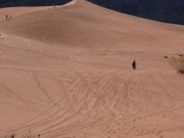 | 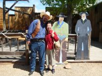 | 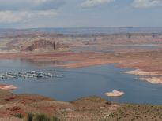 | 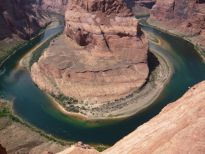 |
| Coral Pink Sand Dunes | Movie Set Museum Kanab | Lake Mead | Horseshoe Bend |
We left the hotel again and we got to Coral Pink Sand Dunes State Park before long, about 20 minutes. That is like Tottori sand hill but sand is rather red than pink. Then we started for Page and on the way we stopped to have lunch in Kanab called small Hollywood and we enjoyed Movie Set Museum Kanab there. Some Western movies used this place and sets. We had small buffet of roast beef, potato and bean which tasted not bad.
Lake Mead is a kind of gigantic dam which was made by Hoover Dam. There was nothing around there but dry land and top flat mountains, as far as I could look.
After bus ride we got to a low red sand hill and I walked up for twenty minutes and reached Horseshoe Bend which was a tourist spot because of the shape made by Colorado River.
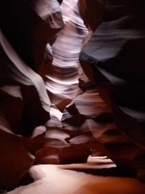 | 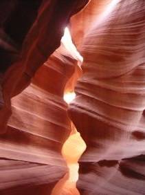 | 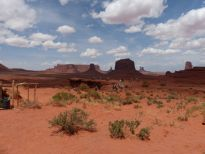 | 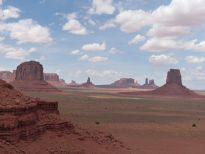 |
| Antelope Canyon (3) | Antelope Canyon (3) | John Ford's Point | Monument Valley |
At three o'clock we reached the gate of Antelope Canyon and we took part in the local Antelope Canyon tour. We rode on a open jeep and went through a sand field with the sand smoke. Then we faced queer rocks that made of sand called canyon. Strong rain water made unique and funny figures, that took contrast and harmony with sun light. Guides of the tour were Indians who should be called "Native American". Our local guide said that they were rather poor, so that a tip would rejoice them. And they would work hard for it, taking photos. Japanese expected a guide who worked hard with smile and after the tour we didn't hesitate to give her a tip.
Today's dinner cuisine was pork ribs, fried rice and salad at the restaurant which had got a name for good food. This time we were used to tasting in America, so the dinner was not so bad.
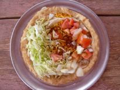 | 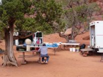 | 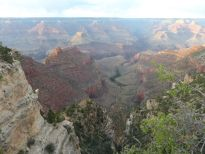 | 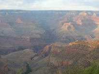 |
| Navajo Food | in Monument Valley | Sunset Point | Sunset Point |
Fourth day our departure time was 9:30. I got up and looked up at outside. The sun was rising and it made the sky turn red gradually. I went out and did physical exercises and tai-chi for a while, looking the rising sun that was very picturesque. Then took a break and started for Monument Valley. We arrived at Monument Valley and rode on some parade cars with each about 10 people
Then we came closer to huge red rocks and sand field through a red sand way with terrible dust that our cars made.
It was funny because to avoid heavy dust most of Japanese wore sunglasses and a mask that our guide recommended to do and looked strange for foreigner who did not.
Looking great scenery, I felt that I would be in a Western film. As far as I can look there were rock mountains like monuments of the unique shape and red dry land . Around here is the worship place of Indians and we can understand the reason why it is.
Then we went to Grand Canyon. From the place called "Sunset Point" we faced the canyon for an hour. The end of stay, we got a little rain but we didn't need an umbrella. Therefore the place could not command fine view of great nature.
At hotel we had a steak for the dinner and that tasted so so but in America the taste was maybe good.
Jhon Ford was the first director who got the right to make films there from native people, America Indian who were allowed to live here. Jhon Ford loved this scenery that was named "Jhon Ford's Point" later. It was not until I heard a story that I hated Jhon Ford. He bought the right to make movies there, for that he cheated Indian and he paid only one dollar. How cruel he was!
We had Navajo food, putting small cut vegetables on a fried flour skin, for lunch and enjoyed it. And a cup of cool water that was perhaps natural tasted good.
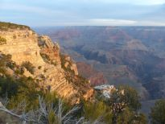 | 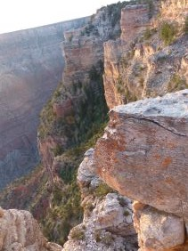 | 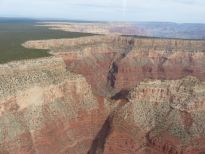 | 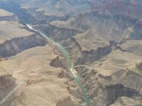 |
| Sunrise Point | Sunrise Point | on a helicopter | on a helicopter |
Before this trip I searched the weather of all days. As a result, unfortunately only the fifth day that we would go to Grand Canyon was rain. The fifth day we got to Grand Canyon although yesterday evening we looked over there for a while. It was not rain but cloudy.
Early in the morning we went to sunrise point with many cloths for the cold. Sunshine gave us nice view of the canyon.
However I was not so surprised at the canyon as my acquaintance said, although it was mammoth landform.
Then we got back to the hotel and we went to a helicopter company to ride on a helicopter as optional tour. After a while we looked over the canyon on a helicopter, being a bit surprised and excited at wild scenery. However, I could not understand how it was splendid and wide exactly, because around there was nothing to measure. we couldn't mostly look at the river from the view point but on a helicopter we could see it and deep valley directly.
Grand Canyon National Park ( from an article )
Grand Canyon National Park is known for its overwhelming size and its intricate and colorful landscape. Over time, the elements have scoured and carved the dramatically splendid Grand Canyon, known as one of world's seven natural wonders.
The distance from the South Rim to the North Rim varies from half a mile (0.8km) to eighteen miles (29km), and the canyon has a maximum depth of 6,000 feet (1,800m). This great range in elevartion allows for a variety of climate, flora, and fauna; of the seven life zones on the North American continent, four can be experienced within the Grand Canyon.
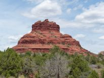 | 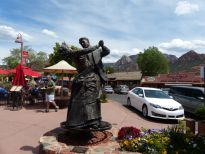 | 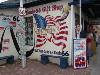 | 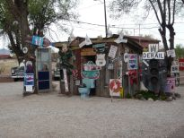 |
| Bell Rock | Sedona | Angel's Barbershop | Seligman Route 66 Town |
We rode on bus for two hours and we got to Sedona. On the way we stopped to take a rest and I took a small red stone including some crystal dust there.
That day's lunch and dinner were not included in tour fee. For the lunch guide recommended a food coat restaurant. However many customers stood in a line and our group members also lined up, getting guide's advice to order lunch. We went out and walked around town first. By the time to gather we ordered sandwiches at the food coat restaurant, and took away them to eat them in our bus. In Circus Circus Hotel for the dinner we had two tacos, a tostada and an enchilada at Blue Iguana which maybe was one of chain shops in America. That tasted terrible.
Sedona is famous for a power spot town in these days. Bell Rock whose name is from the shape of a bell in a church is also said one of power spots.
Although Sedona was a small town, it prospered, many people who may be tourists have come.
On the way we called on the shop called "Angel & Vilma Delgadillo's Route 66 Gift Shop & Visitor's Center". Our guide said that this shop was allowed as a official federal shop. There were unique old small shops and adjacency was a old road of Route 66 that remained old days.
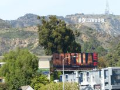 | 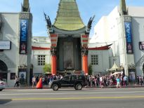 | 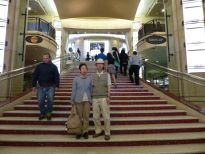 | 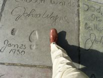 |
| Hollywood | Chinese Theater | inside of Chinese Theater | in front of Chinese Theater |
We had long journey again by bus. On route to Los Angele we had lunch at a famous hamburger shop, "In Out", in America. That tasted good as same as Japan's.
The sign of "Hollywood" on the mountain is famous for an unique idea and a striking figure. However the sign was advertisement of real estate at first. Then it is sold and now it is the third generation.
Why Chinese Theater was built in unique style was that in that era Chinese style was very new to build it. You know, when Academy Awards ceremony is hold, movie stars walk through the red carpet which we stand on in this photograph.
Jhon Wayne
In front of Chinese Theater there are many handprints and footprints that selected top stars of movies left, about only two hundreds.
Do you know that he was body immense and his role in movies was a big man? Officially it was said that he was 193 cm tall but our guide said he was only 171cm. And it was difficult to make him big in movies, for example his gun was diminished in size and the ceiling was made lower and so on. He left his footprints and his print of fist in front of Chinese Theater.
His hand was perhaps so small that he had a complex and he couldn't leave his handprint. However it was sure that his shoe print was smaller than I, 167 cm tall.
We had dinner at Chinese restaurant in Chinatown. I had rice and rather familiar food in many days and felt easy about them.
Morning of the seventh day, we started for Los Angele airport and headed toward Narita around noon. The eighth day we arrived at Narita airport at about three in the afternoon and we got home at night.
{kind=link}
{kind=link}
{kind=link}
{kind=link}
{kind=link}
{kind=link}
{kind=link}
{kind=link}
{kind=link}
{kind=link}
{kind=link}
{kind=link}
{kind=link}
{kind=link}
{kind=link}
{kind=link}
{kind=link}
{kind=link}
{kind=link}
{kind=link}
{kind=link}
{kind=link}
{kind=link}
{kind=link}
{kind=link}
{kind=link}
{kind=link}
{kind=link}
{kind=link}
{kind=link}
{kind=link}
{kind=link}
{kind=link}
{kind=link}
{kind=link}
{kind=link}